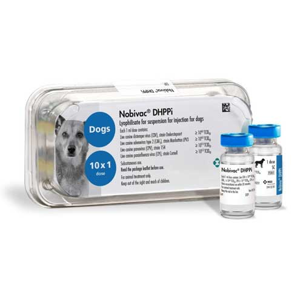

واکسن زنده تخفیف حدت یافته 4گانه بر ضد ویروس دیستمپر،آدنو ویروس و پارواویروس و ویروس پارا آنفولانزا سگ سانان، شرکتMSD هلند
📝ترکیب واکسن:
هر دز از واکسن حاوی حداقل10⁷TCID₅₀ ویروس عامل بیماری پاروویروس سویه 154 و حداقل 10⁴TCID₅₀ ویروس عامل بیماری دیستمپر سویه Onderstepoort و حداقل10⁴TCID₅₀ ویروس عامل بیماری آدنوویروس تیپ٢ سویهManhattan LPV3 و حداقل TCID₅₀ 10⁵∙⁵ ویروس عامل بیماری پاراآنفلوانزا سویه Cornell می باشد.
📝شکل و نوع واکسن:
واکسن زنده تخفیف حدت یافته و لیوفیلیزه
📝موارد مصرف:
واکسن چهارگانه جهت ایمن سازی فعال علیهCanine Distemper Virus ، بیماری تنفسی ناشی ازAdenovirus type 2 ، Canine Parvovirus و بیماری تنفسی ناشی ازCanine Parainfluenza type 1 در سگها
📝دز و نحوه مصرف:
ابتدا واکسن را در حلال مخصوص به خوبی حل کرده، سپس ١ میلی لیتر واکسن Nobivac DHPPi را به صورت زیر جلدی تزریق کنید. اولین دز تزریق واکسن در ٨-۹هفتگی و تزریق دوم در١٢ هفتگی توصیه میشود.
📝زمان شروع ایمنی وافزایش تیتر:
◽️برای عفونت های CDV & CPV، یک هفته پس از تجویز
◽️برای عفونت CAV 2، دو هفته پس از تجویز
◽️برای عفونت CPi، چهار هفته پس از تجویز
ماندگاری ایمنی متعاقب با واکسیناسیون برای ویروس های با منشآ CDV, CAV2 & CPV سه سال و در عفونت با منشآ CPi، تا یک سال پس از تجویز اولیه.
📝توصیه ها و احتیاطات لازم:
◽️دقت کنید واکسن از شبکه توزیع رسمی تهیه شده باشد.
◽️واکسن باید طبق نظر دامپزشک مصرف شود.
◽️با هیچ گونه واکسن زنده و یا محصولات ایمونولوژیکی مخلوط نگردد.
◽️دور از دسترس کودکان، حیوانات و افراد بی اطلاع نگهداری شود .
◽️در صورت ورود اشتباه سرنگ به فرد تزریق کننده سریعا محل را با آب شست و شو داده و اگر علائم خاصی بروز کرد به پزشک مراجعه شود.
📝موارد منع مصرف:
از واکسیناسیون سگ های بیمار خودداری شود.
📝عوارض جانبی:
١. ممکن است یک تورم جزئی و موقت در محل تزریق پس از واکسیناسیون رخ دهد. این تورم پس از مدتی ناپدید میشود.
٢. در موارد بسیار نادر واکنش ازدیاد حساسیت خواهد بود که بدون فوت وقت سریعا آنتی هیستامین، کورتیکواستروئید یا آدرنالین باید تجویز شود.
۳. ممکن است افزایش ملایم دمای بدن و همچنین به ندرت در توله سگها کاهش فعالیت و اشتها پس از واکسیناسیون رخ دهد.
📝شرایط نگهداری:
در دمای ٢ تا ٨ درجه سانتی گراد و دور از نور، حمل و نگهداری شود.
📝مدت نگهداری:
◽️عمر قفسه ای: ۲ سال
◽️زمان مناسب مصرف پس از آماده سازی واکسن: ۳۰ دقیقه
📝بسته بندی:
بسته بندی بصورت ویال های تک دزی ٥، ١۰، ۲٥، ٥۰ عددی واکسن Nobivac DHPPi محصول شرکتMSD هلند میباشد.
کاتالوگ محصول